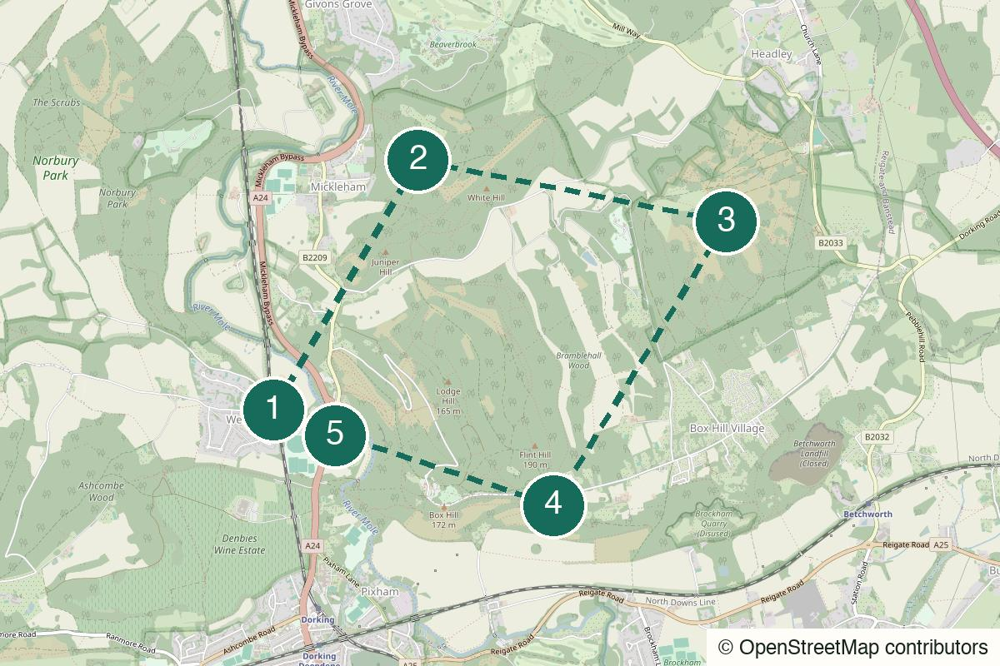

Outside London Not yet field-walked
Marlow to Hambleden
A train-out Thames walk for river meadows, two locks, a proper village pub and the satisfying simplicity of walking back the way you came.
Start Marlow rail station
Not yet field-walked · verify live details
A direct train from Waterloo for chalk climbs, long views and a route that earns one last drink near the platform.
Desk-checked or awaiting another field walk – details not yet reconfirmed.
Desk-checked from current National Trust, National Rail and route information in July 2026. This is a prototype long loop: the terrain and individual landmarks are real, but the exact 15 km sequence still needs an editorial field walk before it is marked field-checked.
No field notes from readers yet — share one if you walk it.
Box Hill & Westhumble is on the London–Dorking line. Direct services from Waterloo vary by day and engineering work, so check the live National Rail planner before setting out and before the return.
Box Hill & Westhumble rail station – Leave the station, use the pedestrian underpass where the route meets the A24.
Mickleham Downs
Open detailed route (opens in a new tab)
Prototype long loop: use the published circular route and live conditions for exact navigation. Do not follow an invented GPX or attempt the hill in trainers after rain; the National Trust warns that the steep paths can be slippery.
We never ask for your location.
Start at the bottom, where the hill does not yet look persuasive. Then take the first climb and keep choosing the higher ground: Mickleham Downs, Headley Heath, Juniper Top and the wide view from Box Hill. The circle makes the landscape keep changing its angle. Come down tired enough that the Stepping Stones feels perfectly proportioned, then take the direct train back without having to explain why the day was worth it.
Not an empty secret landscape, a casual stroll or a route that stays pleasant in bad weather just because it is near London.
This works only if both people genuinely enjoy a hard walk. The view creates conversation; it does not compensate for a mismatch on hills.
Keep it small and set a realistic pace. The strongest version is two to four people who will take the descent seriously and not splinter at every viewpoint.
A satisfying solo challenge in clear weather. Download the detailed route before the train and turn back if conditions do not match your footwear or confidence.

Box Hill & Westhumble station, Westhumble RH5 6BT
From the start Leave the station, use the designated A24 underpass and follow the published circular route towards the river and the first climb. Do not cross the dual carriageway directly.
The only flat beginning you get. Check the weather, tighten the laces and make a deliberate start before the route begins asking something of your legs.
Walk here from the station to Box Hill & Westhumble station → River Mole (opens in a new tab)Official information for Box Hill & Westhumble station → River Mole (opens in a new tab)
Mickleham Downs, Surrey Hills
From the previous stop Use the published circular-route directions for the climb and ridge junctions. Pause on the downs rather than making the first viewpoint a race to the next one.
The first proper change of scale: chalk underfoot, longer sightlines and London already far enough away to stop being the day’s reference point.
Walk from the previous stop to Mickleham Downs (opens in a new tab)
Headley Heath, Surrey KT18
From the previous stop Continue on the published loop through the heath and woodland tracks. In wet conditions, slow down rather than taking the slickest-looking shortcut.
A quieter middle with heath and woodland atmosphere – the point of the loop is that it refuses to be only the famous view.
Walk from the previous stop to Headley Heath (opens in a new tab)
Box Hill viewpoint, Tadworth KT20 7LB
From the previous stop Follow the published route back towards Juniper Top and the Box Hill summit. Use the live map for the exact descent rather than following other walkers into an unsuitable path.
The reason this is the challenging filter choice: the panorama is not handed to you at station level. Take it in, refill water if possible, then treat the descent as seriously as the climb.
Walk from the previous stop to Juniper Top and Box Hill viewpoint (opens in a new tab)Official information for Juniper Top and Box Hill viewpoint (opens in a new tab)
The Stepping Stones, Westhumble Street, RH5 6BS
From the previous stop Use the designated descent, cross the River Mole by the safe route and follow Westhumble Street to the pub. From there, return to the station via the pedestrian route under the A24.
A useful finish because it is close to the station and does not ask the day to become dinner. One drink or a proper meal, then the train is close enough to keep the ending clean.
Walk from the previous stop to The Stepping Stones → train home (opens in a new tab)Official information for The Stepping Stones → train home (opens in a new tab)
A ridge-and-downs walk with sustained climbs, descents, uneven chalk paths and woodland tracks. The famous Box Hill descent includes hundreds of steps; wet chalk and leaf litter can be slippery.
Chalk paths and wooded sections become slick after rain or in winter. The National Trust specifically warns that the paths can be slippery in wet or wintry weather.
The ridges and viewpoints are exposed to wind and sun. Carry water, sun protection or an extra layer according to the forecast.
The route uses a station underpass and short road sections at the bottom of the hill; do not cross the A24 outside the designated pedestrian route.
Expect gates and uneven access on a countryside ridge loop. Do not treat it as a mobility-accessible walk.
Carry enough water and food for the climb. The National Trust café at the summit and the pub at the end are useful but should not be your only plan.
Use facilities at the station or National Trust visitor area when open; do not assume facilities across the ridge sections.
Usually present but less reliable than a city walk in folds of the downs and woodland.
The Stepping Stones is the finish, not a mid-route rescue. Check current food service and whether it needs a booking before relying on it.
Nearest practical station: Box Hill & Westhumble rail station
The pub is a short walk from the station. Check the live departure board before ordering, then cross back to the platform through the designated route rather than over the A24.
Dry, clear weather; avoid wet or icy paths
Carry water and food. The café and final pub are useful bonuses, not a plan robust enough to replace supplies on a long ridge loop.
The intended version: a 15 km circular ridge route through Mickleham Downs, Headley Heath, Juniper Top and Box Hill, ending by the station.
Postpone. The official short trail itself warns of slippery wet and wintry paths, and this longer version only compounds that risk.
Let the final pub stop remain the finish. The journey back to Waterloo has enough room for a second conversation without adding another London venue.
There is no planned short fallback in this route card. If the climb feels wrong, use the safest signed route back towards Box Hill & Westhumble and consult a live map or local information.
A hill is not a mood board. Earn the view, then take the train home.
Help keep it useful
Closed gates, changed hours and the point where you bailed are more useful than polite applause.